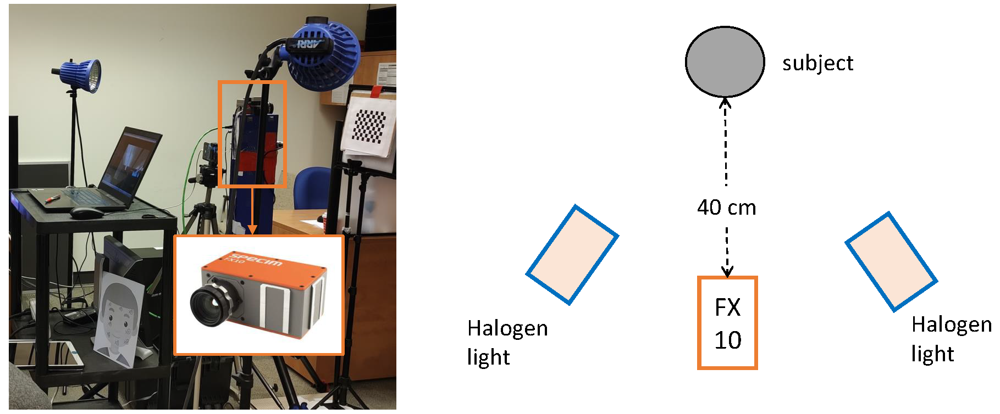

title: Dataset summary: ICASSP 2024 SPGC on Hyper-Skin Vision authors: - Pc Ng - Olivia Liu date: 2023-06-09
The data that will be used in the competition is carefully collected and curated following the ethical guidelines approved by the Human Research Ethics Program (HREP) at the University of Toronto. Figure below shows the schematic of our setup for the data collection. The image on the right side illustrates our experimental set up for the data collection, while the right side provides a schematic representation of the set up. The hyperspectral camera used to collect the hyperspectral image is Specim FX10. The Specim FX10 camera has a spectral range of 400-1000 nm, with a total of 448 bands, and a spatial resolution of 1024 \(\times\) 1024 pixels. The frame rate of the camera is set to 45 Hz. Since the Specim FX10 is a line-scan camera, it took approximately 22.7 s to finish scan the entire hypercube of dimension 1024 \(\times\) 1024 \(\times\) 448. The camera was placed at a distance of 40 cm from the subject, who was required to sit on a stool during the data collection. To ensure sufficient lighting for the imaging process, two halogen lights were used and pointed at 45 degrees to the subject. The halogen lights were used because they have a broad spectrum and provide stable illumination for the imaging process.

A total of six images were captured for each subject: three neutral images (left, front, right) and three smiling images (left, front, right). A total of 51 subjects (27 male and 24 female, age from 17 to 60, 46 Asian, 4 European, and 1 Latino) participated in the experiments, with six images per participant. In total, there are 306 hyperspectral images and their corresponding RGB images will be used for the competition. During data collection, participants' personal information will not be recorded in the database, and only a file linking unique ID numbers to participants. All the data is collected with permission from participants who sign an informed consent form, and the data is ready for use in the competition.
Please refer to this link for the dataset description and the instructions to access the data.